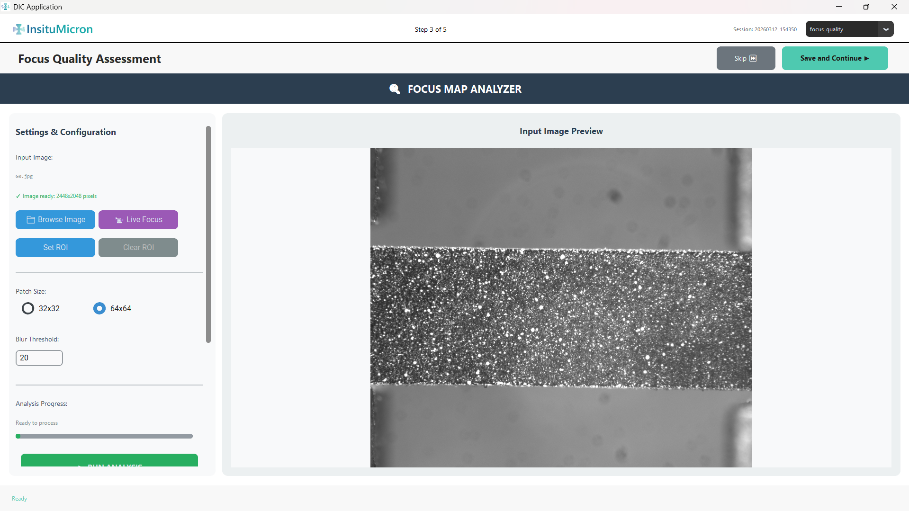
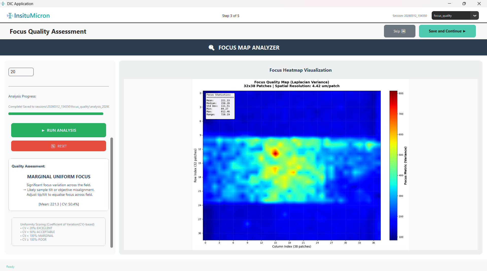
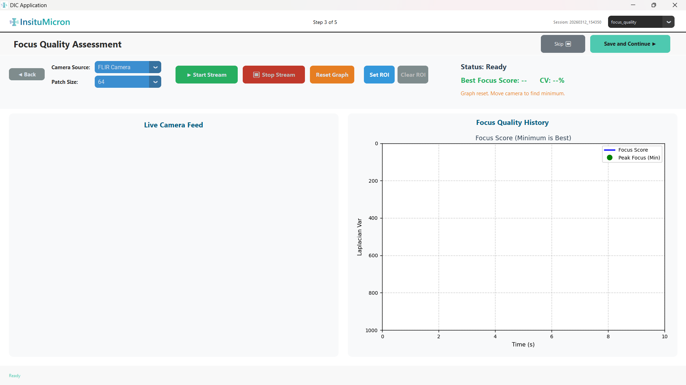
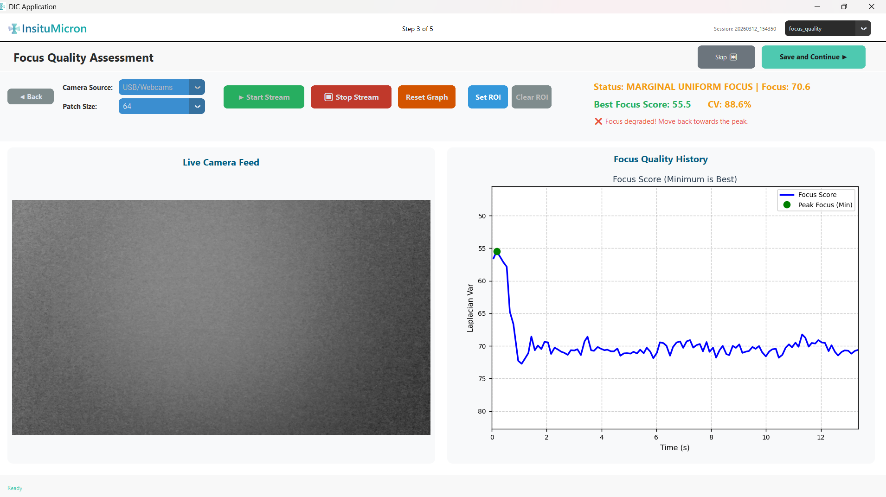

Module 3
Focus Quality Assessment
Verifies that your images are sharp enough for reliable DIC analysis. The Focus Map Analyzer produces a per-patch sharpness heatmap and a single quality rating. A separate Live Focus Evaluator tool assists with physically adjusting your camera before testing begins.

[Screenshot: Focus Quality Assessment main screen]
'">
Figure 3.1 — Focus Quality Assessment module main screen
3.1 Title Bar
The text FOCUS MAP ANALYZER spans the top of the screen. This text confirms which module you are in. It is not interactive.
3.2 Left Panel — Settings & Controls
All configuration and analysis controls are in the scrollable left panel.
| Control | Description |
|---|
| Input Image (label + status text) | Displays the filename of the image loaded automatically from the Acquisition module. Status shows: "✓ Image ready: W×H pixels" in green if an image is available, or "✗ No image loaded from acquisition" in red if not. |
| Browse Image (button) | Manually load a different image file for focus analysis. By default the app uses the first image from the Acquisition module. Use this only if you want to analyze a specific frame. |
| Live Focus (button) | Opens the standalone Live Focus Evaluator window — a separate tool for real-time focus monitoring via a connected camera. See Section 3.5. |
| Set ROI (button) | Activates region-of-interest drawing mode. Click and drag on the right-panel image to draw a rectangle. Analysis will be restricted to that region only, which significantly speeds up processing for large images. |
| Clear ROI (button) | Removes the currently set ROI and restores full-image analysis. This button is disabled (greyed out) until an ROI has been set. |
| Patch Size: 32×32 / 64×64 (radio buttons) | Selects the block size used to tile the image for analysis. Each patch is scored individually. 32×32 produces a finer-resolution heatmap; 64×64 is faster and suitable for larger images or quick assessments. |
| Blur Threshold (numeric input) | The minimum focus score a patch must achieve to be considered "in focus." Default: 20. Patches scoring below this threshold are marked as blurry in the heatmap. Adjust upward if your camera/lens setup produces high focus scores, or downward for soft optics. |
| Analysis Progress (label + progress bar) | Shows "Ready to process" before analysis. During analysis, an animated progress bar appears. Completed immediately for small images. |
| RUN ANALYSIS (large green button) | Starts the focus analysis in a background thread. The heatmap and results appear in the right panel when complete. This button is disabled while analysis is running. |
| RESET (red button) | Clears the heatmap, all result text, and the current ROI. Returns the module to its initial state. The loaded image is retained — only results are cleared. |
3.3 Quality Assessment Results
After analysis completes, a results box in the left panel displays a summary rating and statistics. The overall quality rating is one of four grades:

[Screenshot: Results box showing EXCELLENT rating in green]
'">
Figure 3.2 — Focus quality results box after analysis
| Rating | Condition | Recommended Action |
|---|
| EXCELLENT | Focus is highly uniform across the image. All or nearly all patches score above the threshold. | Proceed to the next module. No action needed. |
| ACCEPTABLE | Minor focus softness at edges or corners. Most patches pass. | Proceeding is generally safe. Results may show slightly higher displacement noise near blurry areas. |
| MARGINAL | A significant proportion of patches are below the threshold. The image has noticeable variation in sharpness. | Strongly consider re-focusing the camera before acquisition. Use the Live Focus Evaluator (Section 3.5). |
| POOR | The majority of patches fail. The image is globally blurry. | Do not proceed with DIC analysis. The image is insufficiently sharp. Re-focus the camera and re-acquire images. |
The results box also shows:
- Mean focus score — average Laplacian variance across all patches.
- Percentage of patches passing — the fraction scoring above the blur threshold.
- Coefficient of variation (CV%) — how consistent the focus is across the image. Lower = more uniform.
3.4 Right Panel — Focus Heatmap
The right panel displays the reference image with a semi-transparent focus heatmap overlay. Each colored patch corresponds to one block of the image and is colored by its focus score. The heatmap updates automatically after each fresh analysis run.
| Heatmap Color | Meaning |
|---|
| Red / Orange / Yellow (hot colors) | High focus score — this region is well-focused and sharp. |
| Green | Moderate focus score — borderline acceptable sharpness. |
| Blue / Violet (cool colors) | Low focus score — this region is out of focus or blurry. |
Use the heatmap to identify whether blurriness is global (uniformly cool-colored) or localized (e.g., only the edges are blue). Localized blur in the specimen area is more concerning than blur at the image periphery.
If the entire heatmap is uniformly cool-colored (blue/green throughout), the image is globally blurry. Do not proceed — re-focus the camera and re-acquire the image sequence before continuing.
3.5 Live Focus Evaluator
Clicking the Live Focus button opens a standalone window — the Live Focus Evaluator. This tool is intended for use during setup, before you start capturing your actual test images. It provides real-time numerical and graphical feedback as you physically adjust the camera focus ring or specimen position.

[Screenshot: Live Focus Evaluator window — top control bar, left camera feed, right focus graph]
'">
Figure 3.3 — Live Focus Evaluator window
Top Control Bar
| Control | Description |
|---|
| Start Camera (FLIR) (button) | Connects to a FLIR hardware camera via PySpin and begins streaming. Once active, all other controls become operational. |
| Start Camera (USB/CV2) (button) | Connects to a standard USB webcam via OpenCV and begins streaming. |
| Stop Camera (button) | Disconnects the active camera. Disabled until a stream is active. The graph data is preserved; only the live feed stops. |
| Reset Graph (orange button) | Clears all accumulated graph history (time series, best score). Useful when you want to start a fresh focus search after repositioning the camera significantly. |
| Status: label (center) | Real-time status text showing the current quality rating (e.g., "Status: EXCELLENT | Focus: 1423.2 | CV: 12.4%"). Color changes: green for EXCELLENT/ACCEPTABLE, yellow for MARGINAL, red for POOR. |
| Guidance text (orange, next to status) | Dynamic instruction that updates based on focus trend: "Move the camera/specimen slowly to find the peak", "✅ New best focus! Hold position or try to improve.", or "❌ Focus degraded! Move back towards the peak." |
| Best Focus Score: (green label, top-right) | Displays the single best focus score recorded during this session (or since last Reset). Lower score = sharper image because the Y-axis is inverted — the software tracks the minimum of a Laplacian-based metric. |
Left Panel — Live Camera Feed
| Element | Description |
|---|
| Camera feed canvas | Displays the live image from the connected camera, refreshed at up to 10 display frames per second. Frames are downscaled to fit the panel — no image data is lost for analysis. |
| "Camera Feed Not Started / Select a camera to begin" placeholder | Shown before any camera is connected. Plain dark text on a light background. |
How to use: Watch the Status label and the Best Focus Score while slowly rotating the camera focus ring — or moving the specimen axially — from one extreme to the other. The point where the Best Focus Score value is at its minimum (and the label reads EXCELLENT) is your optimal focus position. Hold that position.
Right Panel — Real-Time Graph
A real-time graph updates automatically every time a new frame is analyzed (approximately every 50 ms, i.e., up to ~10 FPS).

[Screenshot: Real-time graph panel — Focus Score over Time]
'">
Figure 3.4 — Live Focus real-time graph: Focus Score over Time
Graph — Focus Score over Time
| Element | Description |
|---|
| Blue line | The mean focus score plotted continuously over time (seconds on the X axis). Lower value = sharper focus. The Y axis is deliberately inverted so that sharper focus appears visually higher on the chart — making the "best" position easy to see as a peak. |
| Green dot — "Peak Focus (Min)" | A marker placed at the single minimum (best) focus score observed during the current session. As you improve focus, this dot moves upward on the chart. Use it as your target. |
| X axis | Displays up to the last 60 seconds of data. Scrolls automatically to keep the most recent readings visible. |
| Y axis (inverted) | Dynamically auto-scales to the range of values observed. |
The graph shows a rolling window of the last 60 seconds of data. Older data beyond 60 s is automatically removed. If you hold a good focus position for too long without clicking Reset, the graph Y scale will compress — use Reset Graph to start fresh from any new position.